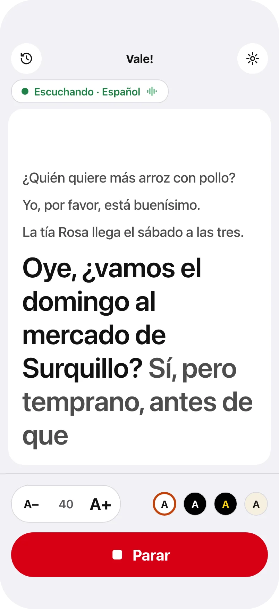

One tap
Start, read, stop.
One big button starts listening. The same place stops it, in red, so you always know whether Vale! is listening.
Vale! writes down what is said in the room, live and in large type, for people who are losing their hearing. Spanish first, German too.

One tap
One big button starts listening. The same place stops it, in red, so you always know whether Vale! is listening.
Your size
A− and A+ make the words smaller or larger, up to very large type, in four high-contrast themes: light, dark, yellow on black and paper.
Private
Vale! is designed to recognize speech on the device itself: no audio and no transcripts are sent anywhere, there is no account, and it works without an internet connection.
Made for the table
The newest words stay huge at the bottom and the conversation stays readable above them. On an iPad or a Mac in front of you, the whole table can talk.
Vale! is in development and not yet on the App Store. It is meant to sit beside hearing care and hearing aids, never to replace them. Questions or ideas? Write to us on the support page.